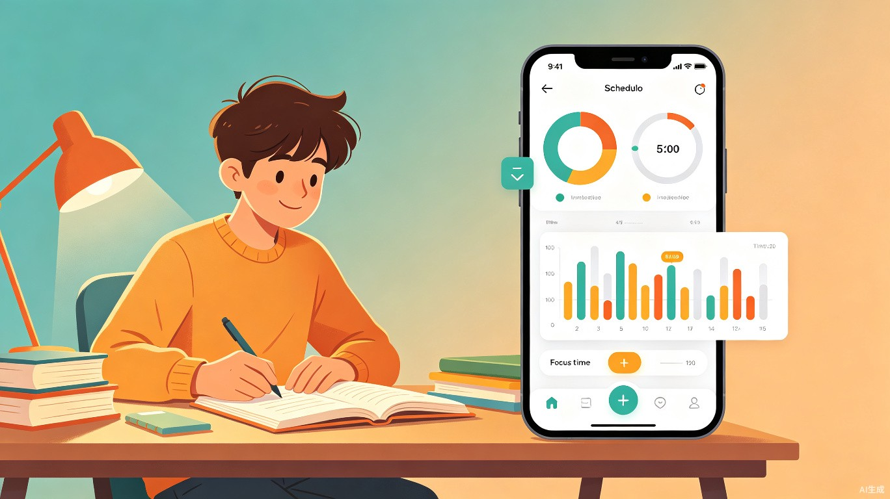
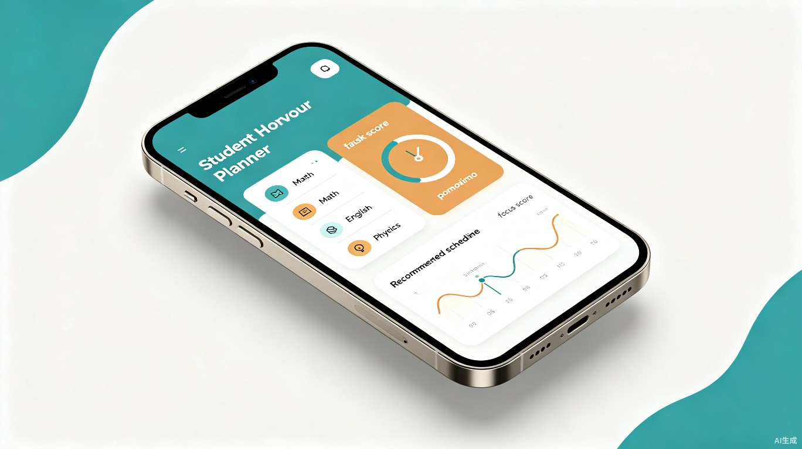
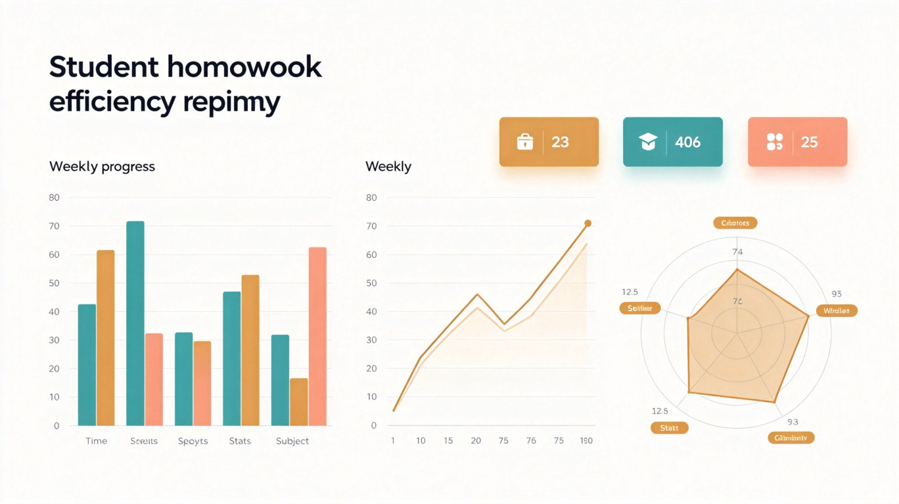

1 创意介绍
要解决什么问题？
中小学生普遍面临作业超负荷问题，但现有时间管理工具只会"算总时长"，完全忽略学科能力差异、精力波动、情绪状态等关键因素，导致规划脱离实际，越规划越焦虑。
为什么想到做这个？
灵感来自真实的晚自习场景：一个数学弱项的学生，花3小时硬啃数学作业，不仅效率极低，还挤占了优势科目的复习时间。而如果能提前把数学拆成3个25分钟番茄钟、穿插擅长的英语作业调剂大脑，同样的总时长，效果可能天差地别。市场上缺的从来不是"计时器"，而是"懂学生的调度员"。
产品形态
学生端 — 微信小程序
轻量化入口，语音/文字输入作业，自动生成个性化执行方案，内置番茄钟与专注度监测。
管理端 — Web 管理后台
家长/老师可查看学情报告，了解学生作业效率趋势、弱科变化及周度数据。
2 目标用户与痛点
核心用户
小学高年级至高中阶段的中小学生（尤其初三、高三毕业班），次要用户为关心孩子学习效率的家长和班主任。
使用场景
每天晚上放学后或周末，学生列出当天作业清单，系统自动生成个性化执行方案——告诉你"先做哪科、做多久、什么时候休息、今晚到底扛不扛得住"。
四大核心痛点
⚠️ 盲目乐观
统一按"老师预估时长"规划，能力弱的科目实际耗时翻倍，计划永远完不成。
⚠️ 精力错配
最难的数学被安排在晚自习最后、精力最差的时间段，事倍功半。
⚠️ 超负荷无感知
叠加弱科占比后总时长已超标，学生硬扛到凌晨，第二天上课昏沉。
⚠️ 缺乏反馈
做完就完了，没有数据告诉学生进步情况，进步感弱、持续动力不足。
3 核心算法 — 智能耗时预测
这套公式让规划从"一概而论"变为"量体裁衣"。弱科优先分配黄金精力段、强科用作大脑调剂，同等作业量下，预计实际完成时间可缩短 15%~25%，且正确率不降反升。
能力值自动校准示意
4 六大核心功能

| 功能模块 | 具体说明 |
|---|---|
| 智能作业解析 | 支持语音/文字输入"数学/45分钟/明天交"，自动提取科目、预估时长、截止时间；结合该科目历史能力值，按公式重算实际耗时。 |
| 五维超负荷诊断 | 综合作业总时长、当前精力值、心情状态、弱科占比、当前时段五个维度，给出"今晚能扛住"或"建议调整"的明确结论。 |
| 弱科精准识别 | 自动筛出能力值 < 5 的科目，交叉比对历史数据，锁定 2~3 个重点关照科目，并给出具体策略（如"数学：建议拆成 3 个 25 分钟番茄钟"）。 |
| 能力加权排序 | 每项作业按截止紧急度(30%)、能力匹配度(25%)、预估耗时(20%)、精力消耗(10%)、心情影响(10%)、科目优先级(5%)六维打分，生成最优执行顺序。 |
| 专注度监测 亮点 | 小程序内嵌番茄钟，完成后让用户自评专注度(1~5分)，系统自动校准该科目的能力值，越用越准。 |
| 周度数据报告 亮点 | 每周生成"作业效率周报"，可视化展示各科耗时变化趋势、弱科提升曲线，让学生看见自己的进步。 |
5 智能调度流程
flowchart TD
A[学生输入作业清单] --> B[智能解析：提取科目/时长/截止时间]
B --> C[能力值查询：匹配历史数据]
C --> D{五维超负荷诊断}
D -->|能扛住| E[能力加权排序]
D -->|建议调整| F[生成调整建议：拆分/删减/延后]
F --> E
E --> G[输出最优执行方案]
G --> H[番茄钟执行 + 专注度自评]
H --> I[更新能力值]
I --> J[生成周度效率报告]
6 周度效率报告

7 价值与意义
⚡ 效率提升
核心公式让规划从"一概而论"变为"量体裁衣"。弱科优先分配黄金精力段、强科用作大脑调剂，同等作业量下预计完成时间缩短 15%~25%，正确率不降反升。
🌿 社会价值
据《中国国民心理健康发展报告》，超30%的青少年存在睡眠不足问题，作业超负荷是主因之一。本产品通过科学调度降低无效加班时长，让学生"睡得够、学得扎实"。对教育资源薄弱地区的学生，免费提供个性化规划能力，具备普惠价值。
8 差异化优势
| 对比维度 | 传统计时器/规划工具 | 作业时间管理助手 |
|---|---|---|
| 规划依据 | 统一按老师预估时长 | 能力值 × 精力 × 心情 × 时段 多维建模 |
| 科目差异化 | 无差异对待 | 弱科拆分番茄钟、强科调剂大脑 |
| 超负荷感知 | 不提示，学生硬扛 | 五维诊断，主动预警"今晚扛不住" |
| 执行反馈 | 无反馈闭环 | 专注度自评 → 能力值自动校准 |
| 数据洞察 | 仅记录总时长 | 周报可视化：耗时趋势、弱科曲线 |
| 定位 | 冷冰冰的排程器 | 懂你的学习搭档 |
🌟 一句话总结
市面上唯一一个把人（能力 / 精力 / 心情）和事（作业 / 截止时间）结合建模的作业规划工具 — 不是冷冰冰的排程器，而是懂你的学习搭档。